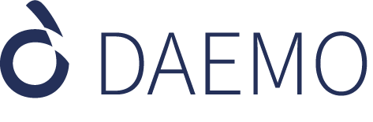

Daemo
January 2015 - December 2015
Daemo is a novel crowdsourcing platform developed under the guidance of Professor Michael Bernstein from Stanford University. I was a member of the Stanford Crowd Research Collective which is a worldwide group of researchers led by Professor Michael Bernstein in Stanford CS Department. I worked on this project for ten months.
Brainstorming
First few weeks involved researching about the existing crowd markets to understand what is working well for those markets and what are the shortcomings. Every team had to write down their learnings from the research. All the learnings were combined to focus on the most important drawbacks to be addressed and the best features to be included in our platform. Following are the ideas my team presented:
1. Requester and worker portfolios : Requesters and workers need to have trust in each other and on the platform they are working on in order to achieve better results. One of the ways to achieve this trust is by having accounts of requesters and workers as portfolios. This portfolio should display their skill sets with a proof e.g. if a worker says he is good in programming then that can be proven by displaying where he graduated from or by telling which IT company he worked for and what was his contribution there. On the requester side, he can provide as proof the details about the company or firm the worker will be working for.
2. Rating and crowd reviewing : Once a work is successfully completed, the requester can give rating to the worker which will be added to his portfolio. This will help to improve his profile so that other requesters can trust the worker and he will get more opportunities. Same goes for the requester as well. The worker can rate the requester on the grounds of the work allotted to him and how the requester’s attitude was towards his worker.
3. Creation and Monitoring of Milestones : The current crowdsourcing platforms support the work distribution by the requester, which can only be verified after the final submission. In this scenario, the requester will have no assurance that their work accepted by the multiple workers will be completed on time. In order to overcome this issue, there is a need for the requester to follow and guide through the progress of the workers. This can be achieved by breaking the main problem into smaller ones with defined deadlines. This approach will help the requester to note the workers’ progress at every stage.
4. Chat System : The best way to quickly communicate is to have a chatting mechanism as seen in many social networking sites these days. This will help in better understanding of the problem or the context and the problem can be solved in real time.
Wireframe and Prototype
Next phase we created a prototype of the platform from our ideas using Balsamiq prototyping tool.
Logo Design and UI

This phase we started individually on the track we were interested in. I chose Design track. Here we designed the logo for the platform. The platform was named Daemo after many inputs and discussions. The final logo is shown on the left hand side image.
Usability Testing
I conducted an evaluation of the application to discover how various users ranging from beginner to expert in the field of crowdsourcing interpret the application. I wanted to get a deeper understanding of the user experience, in addition to comprehend the similarities with other crowdsourcing platforms. Keeping the factor of accessibility in mind, I chose to focus on a wide spectrum of users, who were new to the professional world (24-27 age group) to experienced professionals (32-35 age group). I conducted Heuristic evaluation on eight users by assigning them a microtask of Collage Making. I chose this task as it is simple to do and will not consume much time; hence a microtask. I collected data, took interviews, discussed my observations and noted individual findings with respect to the application to complete the evaluation.
Our work was presented as a poster paper titled "Daemo: A Self Governed Crowdsourcing Marketplace" at the 28th ACM User Interface Software and Technology Symposium (UIST) 2015, Charlotte, North Carolina, USA.